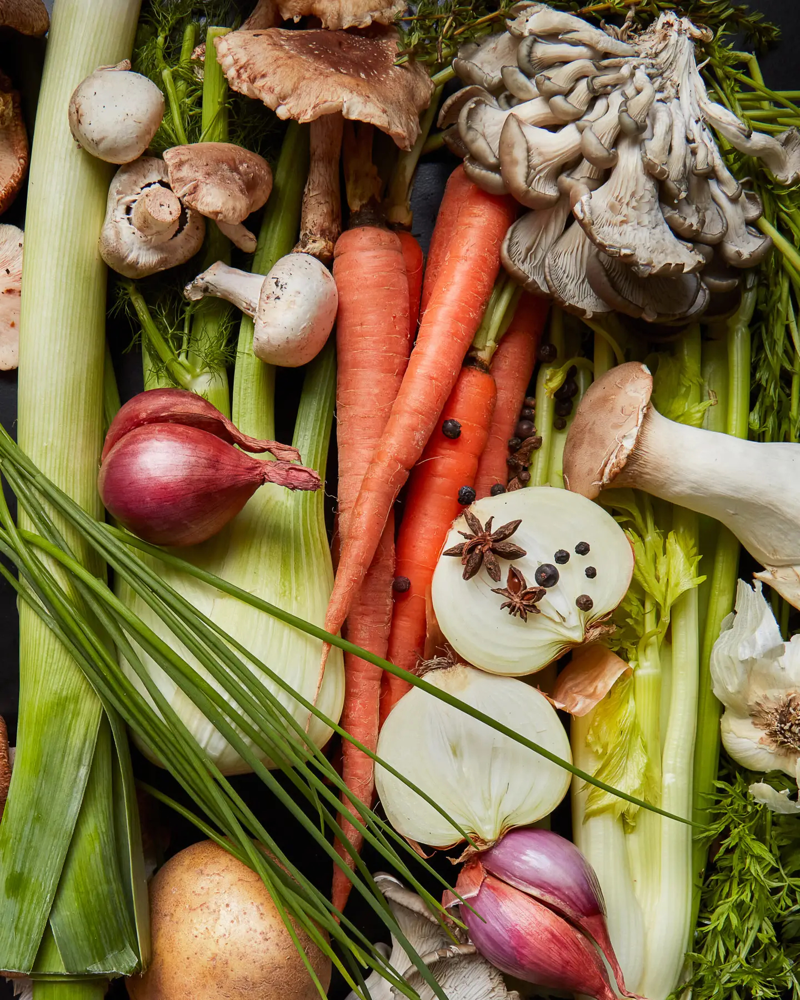

Vegetable Stock

What you need
- Assorted vegetables: enough to fill ⅓ of your stock pot, including one potato, some alliums, and plenty of mushroom stems and scraps.
- Herbs and aromatics such as parsley stems, peppercorns, and bay leaves
- 20-quart or 20L stainless steel stock pot
- Fine mesh strainer
What to do
Step 1: Fill the stockpot with vegetables, herbs, and aromatics
The most important part of making a good vegetable stock is using a diverse selection of ingredients, Garaventa explains.
She collects the scraps from various other dishes and throws them all into the stock pot, aiming to fill it about one-third of the way up before adding water.
Along with traditional stock vegetables, like celery, she makes sure to add plenty of mushrooms—especially leftover stems—and a good selection of alliums like onions, leeks, scallions, and shallots.
The one non-scrap—and somewhat non-traditional—vegetable she always includes is a potato, which she calls a key ingredient for how it transforms the consistency of the stock.
"It mellows it out and makes it taste so good."
Step 2: Add water, bring to a boil, then simmer.
Fill the rest of the pot with cold water—essential to extract the most flavor and produce a clear stock.
Then bring it to a boil over high heat. When it starts to boil, turn the heat down to simmer, then Garaventa leaves it for four to five hours
—longer than most vegetable stock recipes call for, but the amount of time she feels it takes to get the flavor where she wants it.
While meat-based stocks require much longer simmers, the fresh flavors will degrade after a point, and vegetables will break down and make a cloudy stock.
Step 3: Let the stock settle and strain.
After four to five hours of simmering, turn the heat off under the pot and let the contents settle.
Once most of the flotsam sinks, strain the liquid through a fine mesh strainer. Discard the remaining vegetable matter, and let the liquid cool completely before storage.
The stock will keep a few days in the fridge, or up to many months in the freezer—even then, it doesn't go bad after time, as much as the flavor fades and degrades.